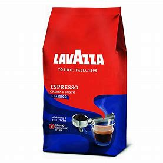

- 


You have never had coffee before or are trying to explain to someone who has never had coffee before what it tastes like, you know it can be quite challenging to nail down the flavor into simple terms.
The many different brands and roasts can also add and take away several characteristics of the coffee taste, making it even more difficult to explain. Keep reading while we try to find the right words to describe the flavor of coffee and look at how the different roasting affects taste. We’ll also discuss the difference between inexpensive coffee and premium brands so you can be better informed.